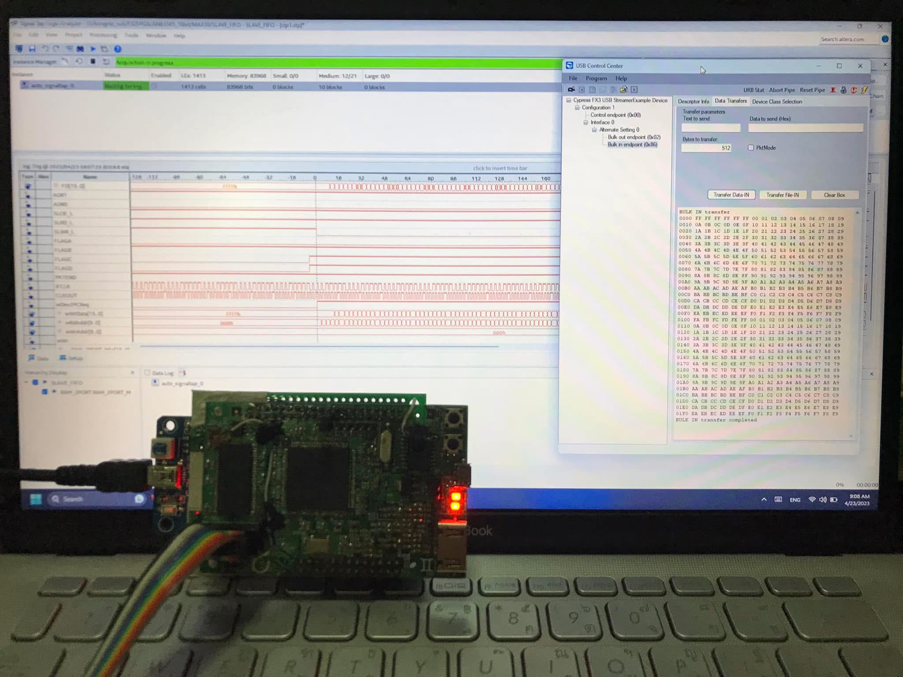
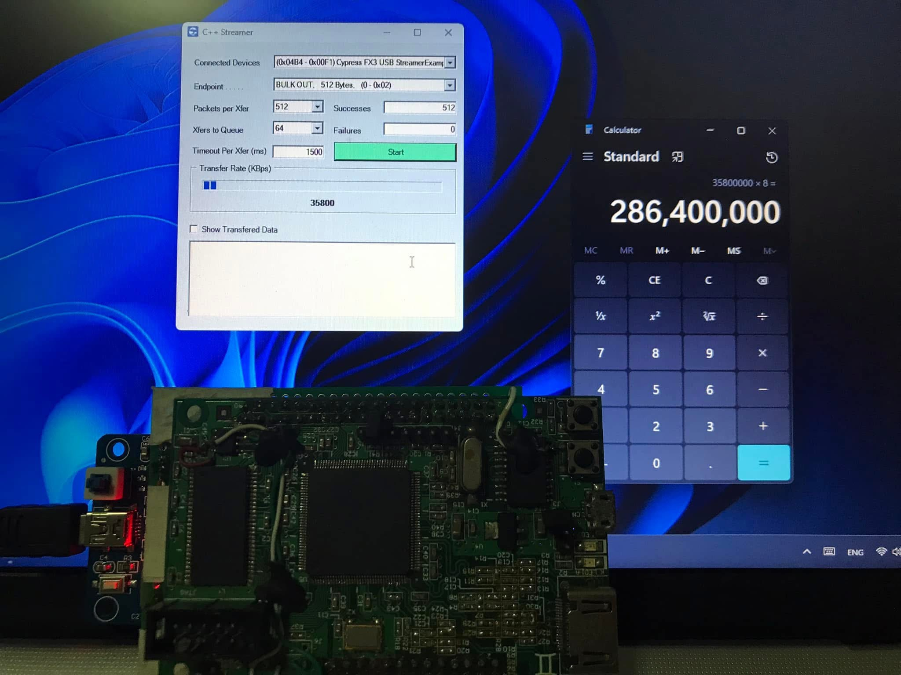
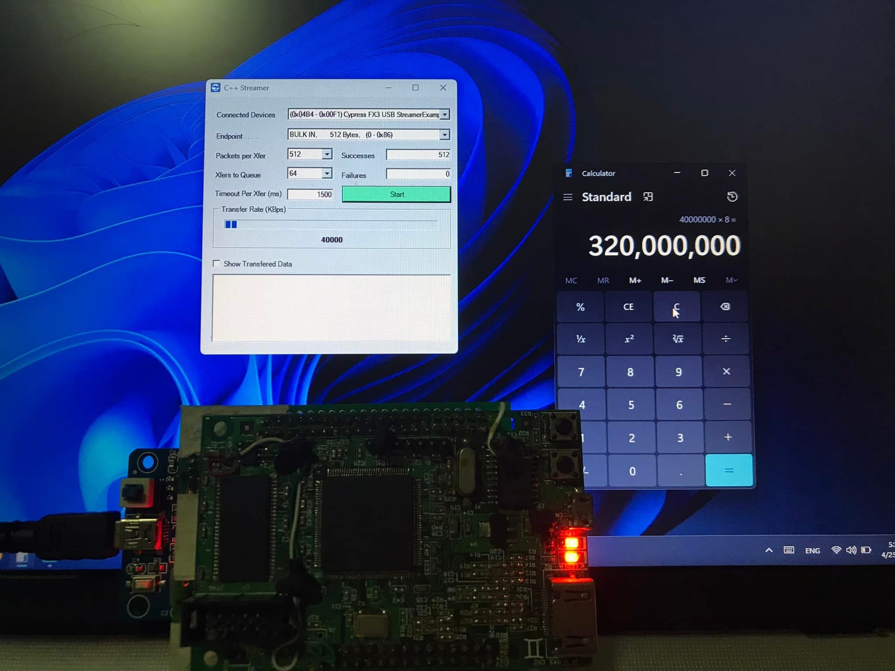

การใช้งาน EZUSB (CY7C68013) interfacing กับ FPGA
Overview
บทความนี้จะอธิบายการเชื่อมต่อระหว่างคอมพิวเตอร์กับ FPGA ผ่านชิป EZUSB FX2LP (CY7C68013A) ซึ่งทำหน้าที่เป็นตัวกลางแปลง USB protocol ไปเป็น Parallel bus (Slave FIFO) ที่ FPGA สามารถคุยด้วยได้ง่าย
สถาปัตยกรรมโดยรวมของโปรเจคตัวอย่างนี้เป็นดังนี้:
- Windows PC: ทำหน้าที่ส่งและรับข้อมูลผ่าน USB โดยอาจจะใช้โปรแกรมเช่น Python, C#, หรือโปรแกรมทดสอบอย่าง Cypress Streamer
- FX2LP (CY7C68013A): ทำหน้าที่เป็น USB device controller แปลงข้อมูลจาก USB ไปเป็น parallel data bus ในโหมด Slave FIFO
- FPGA: ทำหน้าที่อ่านข้อมูลจาก FX2LP และเขียนข้อมูลกลับไป ในตัวอย่างนี้จะเป็นการทำ Loopback คืออ่านข้อมูลที่ได้รับมาแล้วส่งกลับไปทันที
USB Endpoint Configuration
หัวใจสำคัญที่สุดของการทำงานในโหมด Slave FIFO คือการตั้งค่า Endpoint และ Flag ภายในตัว FX2LP ให้ถูกต้อง เพื่อให้ FPGA สามารถรับรู้สถานะของ FIFO (First-In, First-Out) buffer ได้
ในตัวอย่างนี้ เราจะตั้งค่า Endpoint ดังนี้:
EP2: เป็น OUT Endpoint ขนาด 512 bytes, 4x buffered ใช้สำหรับรับข้อมูลจาก PC (PC -> Device)FLAGAจะถูกตั้งค่าให้เป็น Empty Flag ของ EP2 หมายความว่าFLAGAจะ Active (เป็น '1') เมื่อ EP2 มีข้อมูลให้ FPGA อ่านออกไป
EP6: เป็น IN Endpoint ขนาด 512 bytes, 4x buffered ใช้สำหรับส่งข้อมูลกลับไปยัง PC (Device -> PC)FLAGDจะถูกตั้งค่าให้เป็น Full Flag ของ EP6 หมายความว่าFLAGDจะ Active (เป็น '1') เมื่อ EP6 ยังไม่เต็ม และพร้อมให้ FPGA เขียนข้อมูลเข้ามาได้
ขั้นตอนการพัฒนา
1. Compile FX2LP (CY7C68013) Firmware
ส่วนที่สำคัญที่สุดของเฟิร์มแวร์คือการตั้งค่า Register ต่างๆ ในฟังก์ชัน TD_Init() ซึ่งอยู่ในไฟล์ slave.c เพื่อกำหนดค่าการทำงานของ Slave FIFO interface, Endpoints, และ Flags ให้ตรงกับที่เราออกแบบไว้
สามารถใช้ Keil C51 IDE (เวอร์ชันทดลองก็เพียงพอ เพราะโค้ดมีขนาดเล็ก) ในการคอมไพล์ไฟล์ slave.c ให้เป็น .hex ไฟล์สำหรับดาวน์โหลดลงใน FX2LP
โค้ดส่วนสำคัญใน slave.c
// slave.c
void TD_Init( void )
{
// ตั้งค่า Clock ของ CPU และเปิดการใช้งาน CLKOUT
CPUCS = 0x12; // CLKSPD[1:0]=10, for 48MHz operation, output CLKOUT
// ตั้งค่า FLAG A ให้เป็น Empty flag ของ EP2 (EP2EF)
// Active High หมายถึงเมื่อมีข้อมูลใน EP2, FLAGA จะเป็น High
PINFLAGSAB = 0x08; // FLAGA - EP2EF
SYNCDELAY;
// ตั้งค่า FLAG D ให้เป็น Full flag ของ EP6 (EP6FF)
// Active High หมายถึงเมื่อ EP6 ยังไม่เต็ม, FLAGD จะเป็น High
PINFLAGSCD = 0xE0; // FLAGD - EP6FF
SYNCDELAY;
PORTACFG = 0x80; // เปิดใช้งาน FLAGD
SYNCDELAY;
// ตั้งค่า Interface เป็น Slave FIFO mode และรับ Clock จากภายนอก (FPGA)
IFCONFIG = 0x03; // external clock input, Slave FIFO interface
SYNCDELAY;
// --- Endpoint Configuration ---
// EP2: OUT, 512 bytes, bulk, 4x buffered
EP2CFG = 0xA0;
SYNCDELAY;
// EP6: IN, 512 bytes, bulk, 4x buffered
EP6CFG = 0xE0;
SYNCDELAY;
// --- FIFO Reset ---
FIFORESET = 0x80; // Activate NAK-ALL
SYNCDELAY;
FIFORESET = 0x02; // Reset FIFO 2
SYNCDELAY;
FIFORESET = 0x06; // Reset FIFO 6
SYNCDELAY;
FIFORESET = 0x00; // Deactivate NAK-ALL
SYNCDELAY;
// --- FIFO Configuration ---
// EP2: AUTOOUT=1 (ส่งข้อมูลให้ master อัตโนมัติ), WORDWIDE=1 (16-bit)
EP2FIFOCFG = 0x11;
SYNCDELAY;
// EP6: AUTOIN=1 (รับข้อมูลจาก master อัตโนมัติ), WORDWIDE=1 (16-bit)
EP6FIFOCFG = 0x0D;
SYNCDELAY;
}
2. FPGA Design
ฝั่ง FPGA จะมีหน้าที่คอยเช็คสถานะของ FLAGA และ FLAGD เพื่อทำการอ่านและเขียนข้อมูลกับ FX2LP ผ่าน Parallel bus ขนาด 16-bit
- เมื่อ
FLAGAเป็น '1', Control Logic จะรู้ว่ามีข้อมูลมาจาก PC ใน EP2 FIFO มันจะทำการ assert สัญญาณSLRD_L(Slave Read) เพื่ออ่านข้อมูลมาเก็บไว้ใน RAM - เมื่อ FPGA ต้องการส่งข้อมูลกลับ, Control Logic จะอ่านข้อมูลจาก RAM แล้วเช็ค
FLAGDถ้าเป็น '1' (EP6 FIFO ยังไม่เต็ม) ก็จะ assert สัญญาณSLWR_L(Slave Write) เพื่อเขียนข้อมูลเข้าไปใน EP6 FIFO
โค้ดส่วนสำคัญใน PRJ_TOP.vhd
-- PRJ_TOP.vhd
-- ... (entity declaration) ...
architecture RTL of PRJ_TOP is
-- ... (signal declarations) ...
-- สัญญาณควบคุมการอ่าน/เขียน จะถูกสร้างตามสถานะของ FLAGA และ FLAGD
process( CLK_48M , RST_L )
begin
if ( RST_L = '0' ) then
wSLRD_L <= '1' ; -- Active Low, '1' = inactive
wSLOE_L <= '1' ; -- Active Low, '1' = inactive
wSLWR_L <= '1' ; -- Active Low, '1' = inactive
elsif ( CLK_48M'event and CLK_48M = '1' ) then
if(wFLAGA = '1')then -- ถ้า FLAGA Active (มีข้อมูลให้อ่าน)
wSLRD_L <= '0' ; -- ทำการ Read
wSLOE_L <= '0' ; -- เปิด Output Enable
wSLWR_L <= '1' ;
elsif(wFLAGD = '1')then -- ถ้า FLAGD Active (เขียนข้อมูลได้)
wSLRD_L <= '1' ;
wSLOE_L <= '1' ;
wSLWR_L <= '0' ; -- ทำการ Write
else
if(wFLAGA = '0' and wFLAGD = '0')then
wSLRD_L <= '1' ;
wSLOE_L <= '1' ;
wSLWR_L <= '1' ;
end if;
end if;
end if;
end process;
-->> EP2 : PC->device (Logic การอ่านข้อมูลจาก FX2LP)
process( CLK_48M , RST_L )
begin
if ( RST_L = '0' ) then
wPC2DevReq <= '0' ;
elsif ( CLK_48M'event and CLK_48M = '1' ) then
if(wFLAGA = '1')then -- เริ่ม Request เมื่อ FLAGA Active
wPC2DevReq <= '1' ;
else
if(wSLRD_L = '1')then -- หยุด Request เมื่อการอ่านสิ้นสุด
wPC2DevReq <= '0' ;
end if;
end if;
end if;
end process;
-- เขียนข้อมูลที่อ่านได้จาก FD bus ลง RAM
wWr <= wPC2DevReq ; -- Write Enable
wWrData <= wFD ; -- Data to Write
-->> EP6 : device->PC (Logic การเขียนข้อมูลไปยัง FX2LP)
process( CLK_48M , RST_L )
begin
if ( RST_L = '0' ) then
wDev2PCReq <= '0' ;
elsif ( CLK_48M'event and CLK_48M = '1' ) then
if(wFLAGD = '1')then -- เริ่ม Request เมื่อ FLAGD Active
wDev2PCReq <= '1' ;
else
if(wSLWR_L = '1')then -- หยุด Request เมื่อการเขียนสิ้นสุด
wDev2PCReq <= '0' ;
end if;
end if;
end if;
end process;
-- นำข้อมูลจาก RAM (wRdData) ไปเขียนลง FD bus เมื่อ wSLWR_L Active
FD <= wRdData when (wSLWR_L = '0') else (others => 'Z') ;
-- เลือก Endpoint Address ตาม Flag ที่ Active
process( CLK_48M , RST_L )
begin
if ( RST_L = '0' ) then
ADR1 <= '0' ;
ADR0 <= '0' ;
elsif ( CLK_48M'event and CLK_48M = '1' ) then
if (FLAGA = '1')then -- FLAGA active, select EP2
ADR1 <= '0' ;
ADR0 <= '0' ;
elsif(FLAGD = '1')then -- FLAGD active, select EP6
ADR1 <= '1' ;
ADR0 <= '0' ;
end if;
end if;
end process;
end RTL;
3. Test with Cypress Software
หลังจากโปรแกรมเฟิร์มแวร์ลง FX2LP และโปรแกรม FPGA แล้ว สามารถใช้โปรแกรม Streamer.exe (ที่มากับ EZ-USB FX3 SDK) ในการทดสอบส่งและรับข้อมูลได้ โดยโปรแกรมจะแสดงข้อมูลที่ส่งไป (OUT transfers) และข้อมูลที่ได้รับกลับมา (IN transfers) ซึ่งถ้าทุกอย่างถูกต้อง ข้อมูลที่ได้รับกลับมาควรจะเป็นข้อมูลเดียวกับที่ส่งออกไป (Loopback)
ผลทดสอบ



Note
ตัวอย่าง code ทั้งหมดสามารถดาวน์โหลดได้ที่
https://github.com/wichayen/ezusb_experimental